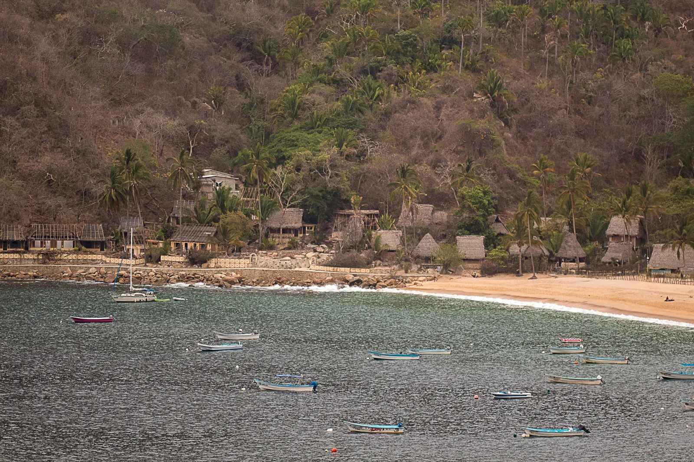
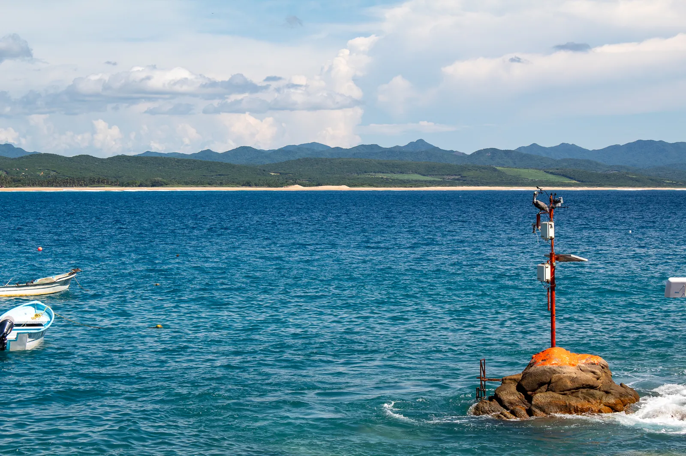
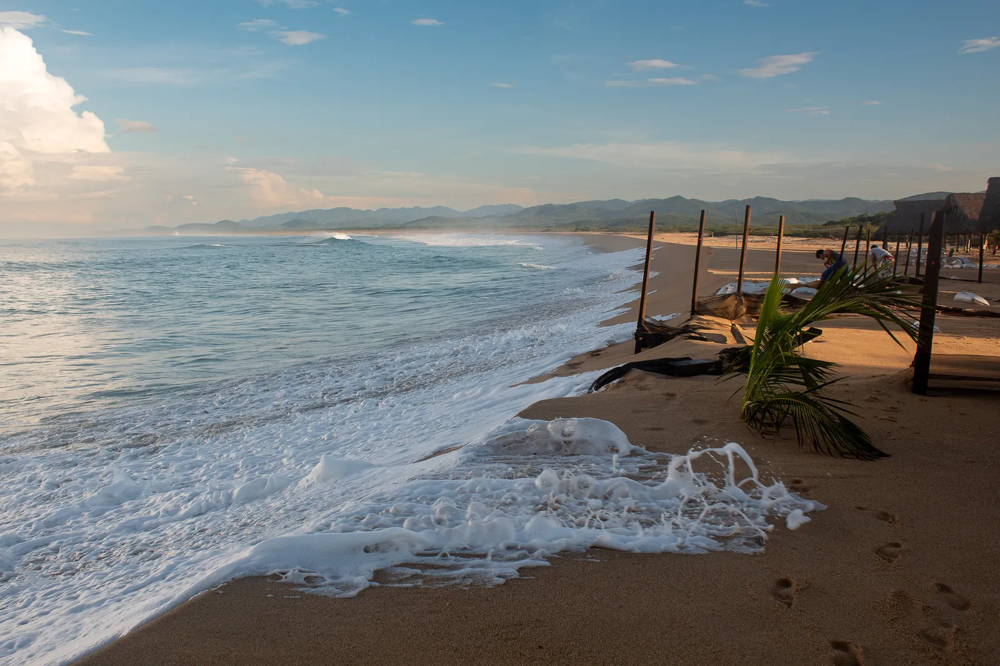

Villa Chimo
Una casa entera frente al mar, con alberca privada y acceso directo a la playa. Dos recámaras, cuatro personas, una sola reserva a la vez.
$150por noche
Ver más

Villa Chimo · Chimo, Cabo Corrientes
Nuestra villa frente a la playa de Chimo, para cuatro personas por ahora. Llegar ya es la aventura: te internas en la selva y sales al Pacífico.
La casa
Crecí viniendo a Chimo. Cuando por fin pude construir aquí, hice la casa que quería tener: la alberca picada en la roca, la teja, la chimenea afuera, y el cerro y el mar entrando por la misma ventana.
La rento entera y una reserva a la vez. La alberca, la terraza y la playa de enfrente son tuyas mientras estés.
— El dueño
Dónde dormir
Una casa entera frente al mar, con alberca privada y acceso directo a la playa. Dos recámaras, cuatro personas, una sola reserva a la vez.
La noche antes y la noche de regreso. La última panga a Chimo sale por la tarde: si tu vuelo llega tarde, aquí duermes y sales temprano al día siguiente.
Cómo se llega
La última panga sale por la tarde. Si tu vuelo aterriza después, duerme en el Depa Vallarta y sal al día siguiente. Nosotros coordinamos la lancha.
El pueblo
Doscientas ochenta personas, una playa que casi siempre está sola, y el ruido de las pangas saliendo a las seis de la mañana. Aquí se vive del pulpo. No hay carretera pavimentada hasta el pueblo, y por eso sigue siendo así.




Experiencias
8 de diciembre al 23 de marzo
La ballena jorobada llega a Bahía de Banderas cada invierno a parir y criar. Las fechas son las publicadas en el Diario Oficial de la Federación, y los prestadores necesitan permiso y curso. Salimos con quien lo tiene.
Todo el año
Con quien lo hace todos los días. Se sale de madrugada y se regresa a desayunar lo que se pescó. Chimo vive de esto: el pulpo y el pescado son la economía del pueblo.
Junio a octubre, cuando llueve
En temporada de lluvia las cascadas de la sierra bajan llenas y el monte se pone verde. Es la mejor época para caminarlas, y la más barata para venir.
La mesa
Los pescadores salen antes de que amanezca y regresan con lo del día. Lo que sube a la mesa lo decides tú.
Incluido
Va incluido en la estancia. Estamos afinando el menú, así que si tienes alguna restricción, dinos y lo resolvemos.
Bajo solicitud
Se pide con anticipación y se cocina en la casa. Pescado y mariscos del día cuando el mar lo permite.
Antes de llegar
Mándanos tu lista y hacemos las compras en Vallarta o en El Tuito para que llegues con el refrigerador lleno. En Chimo no hay supermercado.
Cuándo venir
| Ene | Feb | Mar | Abr | May | Jun | Jul | Ago | Sep | Oct | Nov | Dic | |
| Ballena jorobada | Temporada oficial | al 23 | 8 dic | |||||||||
| Tortuga golfina | Anidación | Anidación y liberación en Mayto | ||||||||||
| Lluvias y cascadas | Ríos y cascadas con agua | |||||||||||
| Temporada | Alta | Baja · estancias largas y retiros | Alta | |||||||||
Para quién es
La casa se renta entera, así que da lo mismo si son dos o cuatro. Esto es lo que más se repite entre quienes nos escriben.
Chimo está metido entre el mar y el monte, y eso es justo lo que lo hace lo que es. También significa que aquí entran insectos, y de vez en cuando algún alacrán. La casa se fumiga y se revisa, pero es una casa en la selva, no un cuarto de hotel en la ciudad.
Si alguien de tu grupo es alérgico a la picadura de alacrán, avísanos al reservar. Es importante: el centro de salud del pueblo guarda inyecciones para urgencias, pero casi nunca hay médico de planta, y conviene que lo sepamos antes y no a media noche.
Hay servicio de limpieza al tercer día de tu estancia, sin que tengas que pedirlo. Si te quedas más, lo repetimos.
La casa tiene seguridad y planta generadora de luz, y es pet friendly: si vienes con perro, dinos de qué tamaño para prepararlo todo.
Dónde está
A unos 30 kilómetros al sur de Puerto Vallarta siguiendo la costa. No hay carretera pavimentada hasta el pueblo: se llega en panga o por terracería desde El Tuito.
El mapa es de Google. Se carga solo si tú lo pides, para no dejarte cookies sin avisar.
Diario
Las tres rutas reales, con horarios, duración y qué esperar en cada una. La duda número uno de todo el que considera venir.
3 min de lectura El puebloCuatro pueblos en la misma costa, todos sin carretera. En qué se parecen, en qué no, y cuál te conviene según lo que andes buscando.
2 min de lectura NaturalezaLa temporada oficial va del 8 de diciembre al 23 de marzo. Qué significan esas fechas, por qué importan los permisos y cómo se ve desde Chimo.
2 min de lecturaSi te quedaste en alguna de las dos casas, cuéntalo aquí. Se publica al momento.
Escríbenos con tus fechas. Te decimos qué hay libre, cuánto sale con impuestos, y cómo te recogemos desde el aeropuerto.